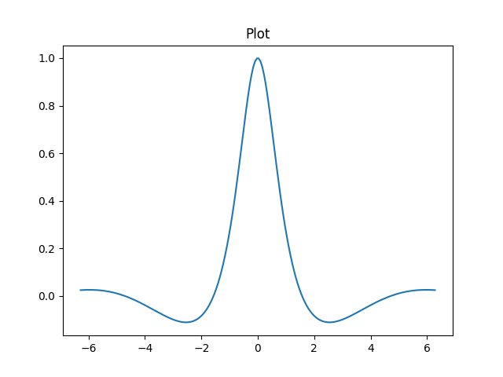

2026-04-13
Before, I would use VSCode for viewing/editing/running Jupyter
notebooks. This is because ".ipynb" files are really just large JSON
blocks rather than just plaintext code + output. This is annoying
because I consider VSCode as a sub-par editor and I would much rather
use Vim. The other issue with ".ipynb" files being JSON is that it
integrates badly with git. Even re-running a code block
will cause a change in the ".ipynb" file by virtue of the fact that the
"execution-count" field for that block has incremented and this causes a
spurious diff.
I found Emacs + Org mode as a satisfactory replacement.
print("Helloworld")The main packages you will need are
org
org-tempo for templatingorg-babel for code executionpyvenv
I also need Evil mode because I use Vim (btw).
/Users/owenyi/.emacs.d/init.el
;; -*- lexical-binding: t; -*-
; Package Management
(require 'package)
(add-to-list 'package-archives '("melpa" . "https://melpa.org/packages/") t)
(package-initialize)
;; Bootstrap use-package
(unless (package-installed-p 'use-package)
(package-refresh-contents)
(package-install 'use-package))
(require 'use-package)
(setq use-package-always-ensure t)
; json
(require 'json)
; Theme
(use-package gruvbox-theme
:config
(load-theme 'gruvbox-dark-medium t))
; Basics
(setq inhibit-startup-message t)
(menu-bar-mode -1)
(tool-bar-mode -1)
(scroll-bar-mode -1)
(global-visual-line-mode 1)
(setq display-line-numbers-type 'relative)
(global-display-line-numbers-mode +1)
(fset 'yes-or-no-p 'y-or-n-p)
; Evil Mode
(setq evil-want-keybinding nil)
(use-package evil
:ensure t
:config
(evil-mode 1))
(setq line-move-visual nil) ;; make gg and G more consistent
(use-package evil-collection ;; override all major modes
:after evil
:config
(evil-collection-init))
(evil-ex-define-cmd "Ex" 'dired) ;; Ex -> dired
; Focus on new splits when created
(defun split-and-follow-horizontally ()
(interactive)
(split-window-below)
(other-window 1))
(defun split-and-follow-vertically ()
(interactive)
(split-window-right)
(other-window 1))
(global-set-key (kbd "C-x 2") 'split-and-follow-horizontally)
(global-set-key (kbd "C-x 3") 'split-and-follow-vertically)
(evil-ex-define-cmd "sp" 'split-and-follow-horizontally)
(evil-ex-define-cmd "vsp" 'split-and-follow-vertically)
; vterm
(use-package vterm
:ensure t)
; Org mode
(use-package org
:config
;; Enable syntax highlighting for code blocks
(setq org-src-fontify-natively t)
;; Don't ask to confirm evaluation of code blocks
(setq org-confirm-babel-evaluate nil)
;; Enable indentation
(setq org-src-tab-acts-natively t)
;; Enable tempo so <s TAB> works
(require 'org-tempo)
;; Add custom template for Python session blocks
(add-to-list 'org-structure-template-alist
'("sp" . "src python :results output :session main"))
(add-to-list 'org-structure-template-alist
'("spf" . "src python :results output file link :session main"))
)
;; Enable Python in Org Babel
(with-eval-after-load 'org
(org-babel-do-load-languages
'org-babel-load-languages
'((python . t)))
(setq org-babel-python-command "python3")) ;; or "ipython --simple-prompt -i"
(add-hook 'org-babel-after-execute-hook 'org-redisplay-inline-images) ; inline images
;; Wrap org babel python code in try except block to show traceback
(defun my/org-babel-python-evaluate
(orig session body &optional result-type result-params preamble async
graphics-file)
"This is the :around advice."
(let ((body (format "\
try:
%s
except Exception as e:
import traceback
traceback.print_exc()
"
(org-babel-python--shift-right body 3))))
(funcall orig session body result-type result-params preamble
async graphics-file)))
(advice-add #'org-babel-python-evaluate
:around
#'my/org-babel-python-evaluate)
; pyvenv
(use-package pyvenv
:ensure t
:config
(pyvenv-mode 1))
; ===
(custom-set-variables
;; custom-set-variables was added by Custom.
;; If you edit it by hand, you could mess it up, so be careful.
;; Your init file should contain only one such instance.
;; If there is more than one, they won't work right.
'(package-selected-packages '(evil-collection gruvbox-theme ob-python pyvenv vterm)))
(custom-set-faces
;; custom-set-faces was added by Custom.
;; If you edit it by hand, you could mess it up, so be careful.
;; Your init file should contain only one such instance.
;; If there is more than one, they won't work right.
)
Create a python virtual environment in an integrated terminal or
shell e.g. with my config I can run :vsp followed by
:vterm to bring up the vterm terminal emulator in a new
buffer and execute python3 -m venv .venv.
Activate the virtual environment with pyvenv. Execute
M-x pyvenv-activate RET location/of/your/.venv.
<sp TAB is the shortcut I defined in my "init.el"
using org-tempo to create a python code block.
#+begin_src python :results output :session main
#+end_src
I like to import sys and os libraries to
also print the location of the python executable being used and the
current working directory respectively.
import sys
import os
print(sys.executable)
print(os.getcwd())Execute the code block by doing C-c C-c. Helpful
shortcuts are listed below.
C-c C-c to do
M-x org-babel-execute-src-blockC-c C-v C-b to do
M-x org-babel-execute-buffer
C-c C-v C-n to do
M-x org-babel-next-src-blockC-c C-v C-p to do
M-x org-babel-previous-src-blockIn Jupyter, variables are shared between blocks. Use the
:session main header to achieve the equivalent behaviour.
You can define multiple sessions e.g. :session foo creates
another session called "foo".
Each session creates a new buffer. Run M-x buffer-menu
to bring up the buffer list. Here's an example
CRM Buffer Size Mode File
.%* *vterm* 140 VTerm
* emacs_org_mode_to_replace_vscode_plus_jupyter.org 6935 Org emacs_org_mode_to_replace_vscode_plus_jupyter.org
* *main* 253 Inferior Python:run
init.el 3746 ELisp/l ~/.emacs.d/init.el
% .emacs.d 521 Dired by name ~/.emacs.d/
* *Org-Babel Error Output* 0 Compilation
* *scratch* 146 Lisp Interaction
%* *Messages* 21150 Messages
%* *Async-native-compile-log* 108 elisp-compile
* *foo* 530 Inferior Python:run
*main* and *foo* buffers which
have Mode as "Inferior Python…". You can delete a session by deleting
the associated buffer e.g. using M-x kill-buffer.import numpy as np
import pandas as pd
import matplotlib as mpl
import matplotlib.pyplot as plt
mpl.use("Agg")
from pathlib import Pathplot_folder = Path("Attachments")
plot_folder.mkdir(exist_ok = True)
filename = plot_folder / "emacs_org_mode_to_replace_vscode_plus_jupyter_plot.png"
fig, ax = plt.subplots()
ax.set_title("Plot")
x = np.linspace(-2 * np.pi, 2 * np.pi, 200)
y = 1/(1+x**2) * np.cos(x)
ax.plot(x, y)
plt.savefig(filename)
plt.close("all")
print(filename)
We specify mpl.use("Agg") to choose plotting backend
that doesn't open up a GUI (we just the want the image saved to a file).
We then specify a folder and file path to save the plot to. We then
print the filename. The header :results file link converts
the filename into an Org mode link (which is just text surrounded by two
square brackets). Org mode follows the link and embeds the image because
we added the hook in our "init.el"
(add-hook 'org-babel-after-execute-hook 'org-redisplay-inline-images).
Further reading:
:session main creates/uses a session called "main"
If session is unspecified the following hold
:results output tells Org mode to grab stdout and embed
that in the results. As such you would need to call print()
at some point to see output.:results value tells Org mode to wrap the code block
inside a function block and embed the output of that function. As such
you need a return statement at the endIf session is specified, the behaviour is slightly different. The way session works is it opens a Python REPL so instead of reading from stdout, it reads what is printed out.
:results file link tells Org mode to wrap the output
inside square brackets to produce an org mode link.
Trying to get error messages to be printed was a pain in the ass. The approach I settled on was to wrap each code block in a try except block.
try:
...
except Exception as e:
import traceback
traceback.print_exc() More information: https://emacs.stackexchange.com/questions/79162/org-babel-python-code-block-not-showing-errors-during-execution
while True:
passInfinite loops cause the entire Emacs application to freeze. Run
C-g a couple times to break out of the loop.
The auto-indentation is a bit janky especially for multiline statements.
print(
"a",
"b",
"c")Move cursor behind the "a" and everytime you press enter Emacs indents everything forward.
Use C-x C-f to create file. When Emacs minibuffer prompt
you with a default, you can clear it with C-a C-k (go to
start + kill line).
Switching buffers
C-x <left> previous bufferC-x <right> next bufferC-x C-b list buffersC-x b switch to bufferJumping between headings
C-c C-n next headingC-c C-p previous heading